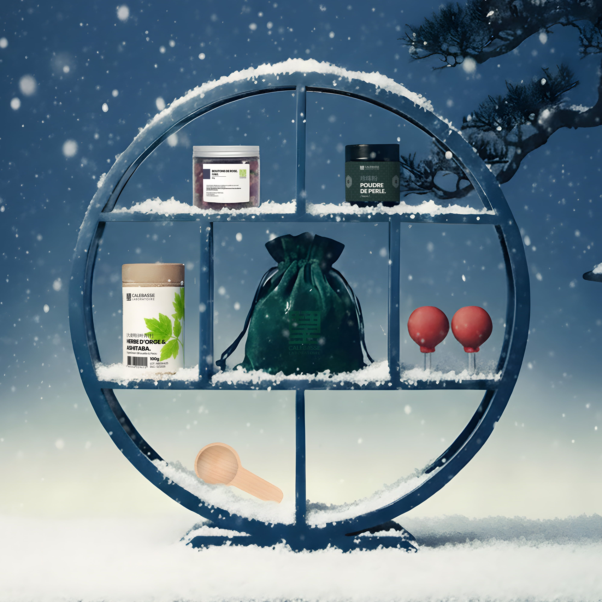

Des trésors de la pharmacopée traditionnelle, soigneusement sélectionnés

Chaque produit Calebasse Laboratoire est le fruit d'un savoir-faire ancré dans la médecine traditionnelle chinoise. Des poudres aux plantes séchées, en passant par les accessoires de soin, nous sélectionnons des ingrédients d'exception pour accompagner votre quête d'équilibre au quotidien.
Voici quelques-uns de nos essentiels — des gestes simples, pour un bien-être durable.
大麦明日叶青汁 · 100g
Un SuperGreen pensé pour la silhouette et la peau. L'herbe d'orge, riche en chlorophylle et en fibres, s'associe à l'ashitaba — une plante japonaise réputée pour ses propriétés antioxydantes — pour offrir un soutien détox naturel au quotidien.
珍珠粉 · Nacré
Utilisée depuis des siècles en Chine pour sublimer la peau, la poudre de perle est un concentré de minéraux et d'acides aminés. En usage interne ou en masque, elle aide à révéler l'éclat naturel de la peau et à apaiser les petites imperfections.
玫瑰花 · 30g
En infusion, les boutons de rose libèrent un arôme délicat et des bienfaits apaisants. Traditionnellement utilisée pour favoriser la circulation du Qi et harmoniser l'humeur, cette fleur est un allié discret mais précieux du bien-être féminin.
拔罐器
Pratique ancestrale de la médecine chinoise, la pose de ventouses stimule la circulation sanguine et dénoue les tensions musculaires. Ces ventouses à poire en verre, simples d'utilisation, permettent de retrouver ce geste de soin chez soi.
Cuillère doseuse en bois, pochette de rangement… Chaque détail est pensé pour que le rituel bien-être soit aussi agréable que bénéfique. Parce que prendre soin de soi commence par de beaux objets.